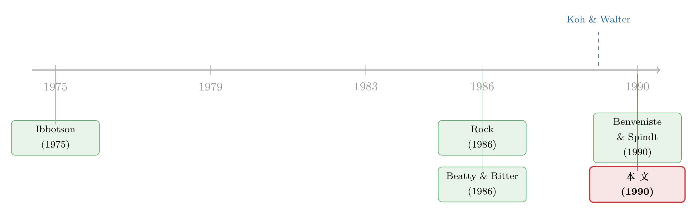

把新股卖给两种人：当监管夺走了承销商「看人下菜」的权利
本文读的是 Benveniste & Wilhelm (1990, Journal of Financial Economics)：承销商若能同时对「价格」和「配售」两个维度做歧视，就能用最小的折价把新股卖出最高的价钱；可一旦监管强行要求「统一价格」，再叠加「均摊配售」，承销商连从知情者嘴里套话的能力都会被一并没收——于是新股只能对所有人一起打折，把不该留的钱也留在了桌上。这，正是新加坡的新股为什么比美国卖得更便宜。
1 一个被忽略的问题：监管，会不会让新股更「贵」？
关于新股折价 (IPO underpricing) 的文章，已经汗牛充栋。几乎所有的故事都在问同一个问题：为什么发行人愿意把钱留在桌上 (leave money on the table)？ 有人说是信号 (signaling)，有人说是声誉 (reputation)，还有人——比如 Rock (1986)——说是「赢家诅咒」(winner's curse)：散户在抢手的好股票上只能分到一点点，在没人要的烂股票上却被塞得满满当当，于是他们要求一个折价作为补偿。
这些故事有一个共同的隐含前提：承销商是在一个没有约束的世界里定价的。可现实并非如此。无论在美国还是海外，监管都在以各种方式捆住承销商的手脚。本文作者注意到了两条几乎被所有人忽略的绳子：
- 第一条，统一价格 (uniform price) 要求。美国 NASD 的「公平交易规则」规定，新股必须以一个事先确定、并在整个发行期内维持不变的价格卖给所有投资者。
- 第二条，均摊配售 (evenhanded allocation) 要求。这条在美国不算正式监管，但在英国和新加坡，超额认购的新股必须「不偏不倚」地分配 [Rock (1986); Koh & Walter (1989)]。
两条绳子都打着「公平对待投资者」的旗号。问题是：它们真的只是「公平」而已，还是会实实在在地改变一支新股能卖多少钱？
本文的回答干脆而反直觉：这两条约束都是有约束力 (binding) 的，而且只要被认真执行，都会减少发行人的预期所得。换句话说，「公平」是有代价的，而这笔代价，最终由发行公司买单。
这篇 1990 年的论文是一篇纯理论模型。它没有回归、没有数据、没有 t 值。但它把「承销商手里到底握着哪几张牌」这件事，第一次掰开揉碎地讲清楚了——而后来几乎所有关于配售歧视的实证（比如 IPO 配售到底是「偏心」还是「有用的偏心」），都在沿着它划下的这条线走。
2 两种投资者，与一台两阶段的机器
要讲清楚这篇论文，先得认识它笔下的两类人。
承销商面对的投资者，被分成泾渭分明的两群：
常客 (regular investors)。他们是一群可以被点名的老主顾——通常是机构，规模大、反复出现、在新股预售期就被邀请提交「认购意向」(indications of interest)。他们是承销商在预售期 (premarket)——也就是初步招股书和正式招股书之间那段时间——唯一可信的信息来源。
散户 (retail investors)。他们人数众多、原子化、一支股票换一批，承销商根本分不清谁是谁。他们就是 Rock 笔下那群会遭遇赢家诅咒的人。
接着，一个自然的问题是：承销商怎么从常客嘴里把信息套出来？答案是一台两阶段的营销机器 (two-stage marketing mechanism)：
- 第一阶段：承销商向常客征集认购意向，试图弄清楚他们知道什么。常客的意向，会被翻译成他们对「状态」的判断——好（g）、无信息（u）、还是坏（b）。
- 第二阶段：承销商根据第一阶段的结果，有条件地决定每个人的价格和份额。
这台机器的精妙之处，正是本文和它的前身 Benveniste & Spindt (1990) 的共同洞见：它是两阶段的。承销商可以先把预售的结果公之于众，再据此定价、配售——这样一来，散户在掏钱时已经知道了常客透露的信息，赢家诅咒就被大大削弱了。（这也是为什么本文得出了与 Bikhchandani & Huang (1989) 相反的结论：在他们的单阶段拍卖里统一价格拍卖更优，而在这里，能对价格做歧视反而能榨出更高的所得——差别就来自这「两阶段」。）
这里要先埋一个伏笔：常客凭什么愿意说真话？因为承销商手里攥着「配售」这张牌。说真话的，给好份额；说假话的，给零份额。后面我们会看到，正是「配售歧视」这张牌的存在，让「价格歧视」即使被禁止，也能被偷偷绕过去。
关于「先把订单簿建起来、再定价」这套逻辑的实证后续，可参见《新股「打折」的真正理由，不是让你说真话，而是先让你肯掏钱》。
3 模型：信息、状态与那个决定折价的方程
下面进入模型。我会尽量一步步讲清楚，不感兴趣大数学的读者可以直接跳到本节末尾的结论。
3.1 信息环境
承销商已经做完了对发行公司的尽调，相关信息都写进了招股书。但可能还有未被发现的信息会影响股票在二级市场的价值。模型这样刻画这种可能：
以概率 \(\pi\)，环境处于一个「存在未发现信息」的状态；这信息以相等的概率是好（状态 \(g\)）或坏（状态 \(b\)）。于是：
$$ \Pr(\text{state } u) = 1-\pi, \qquad \Pr(\text{state } g) = \Pr(\text{state } b) = \frac{\pi}{2}. $$
真实状态最终会通过二级市场价格暴露给所有人。三种状态对应三个二级市场价格，它们之间的关系被设定为：
$$ s^{g} = s^{u} + \alpha, \qquad s^{b} = s^{u} - \alpha. $$
这里 \(\alpha\) 衡量「好/坏信息的价值」。在对真实状态一无所知时，期望价格恰好是 \(s^{u}\)——也就是初步招股书里的那个价格。这一步很关键：\(\alpha\) 越大，信息越「值钱」，赢家诅咒的隐患也越深。
3.2 散户要的那个折价（核心方程）
现在轮到 Rock 的赢家诅咒登场。散户里有比例 \(\beta_i\) 是知情的、\(\beta_u\) 是不知情的（\(\beta_i + \beta_u = 1\)）。当全体常客都表示「没有额外信息」时，承销商无法排除「信息其实存在」的可能——这时若要把股票配给散户，就必须给一个折价。这个折价的大小，由本文的 Theorem 1（它本质上就是 Rock 的结果）给出：
这个公式讲了三件直觉上很顺的事：
- \(\varepsilon\) 随 \(\pi\)（信息存在的概率）和 \(\alpha\)（信息的价值）上升——隐患越大，要赔的越多；
- \(\varepsilon\) 随 \(\beta_u\)（不知情散户比例）下降：\(\partial\varepsilon/\partial\beta_u < 0\)。当不知情散户越多，他们越不容易在「被打折的好股票」上分到份额，赢家诅咒反而越轻——这和 Beatty & Ritter (1986) 的比较静态完全一致；
- 而且 \(\varepsilon < \alpha\) 恒成立，这个不等式后面有用。
关于赢家诅咒在真实配售数据里的样子，可参见《12% 的「免费午餐」，为什么端到你面前就凉了？》。
3.3 让常客说真话：激励相容
模型的另一半，是怎么让常客在第一阶段诚实地报告。
记 \(s_{gh}\)、\(q_{gh}\) 为「一个报告 \(g\)、且另有 \(h\) 个人也报告 \(g\)」的常客所面对的价格与份额；\(s_{uh}\)、\(q_{uh}\) 同理。一个握有好消息的常客，若如实报告 \(g\)，期望利润为：
$$ EP(g,g) = \sum_{h=0}^{H-1} P'(g,h)\,(s^{g}-s_{gh})\,q_{gh}. $$
若他谎报 \(u\)，则得到 \(EP(g,u)\)；类似地，无信息的常客如实报 \(u\) 得 \(EP(u,u)\)，谎报 \(g\) 得 \(EP(u,g)\)。要让所有人说真话，价格-份额表必须满足两条激励相容 (incentive compatibility) 条件：
$$ \text{(IC1)}:\; EP(g,g) \ge EP(g,u), \qquad \text{(IC2)}:\; EP(u,u) \ge EP(u,g). $$
至于报告坏消息的常客——承销商干脆一股都不分给他们。这一招同时干掉了两个偷懒的动机：既然报 \(b\) 拿不到任何份额，握有好消息或无信息的人就不会去谎报 \(b\)；而由 \(\varepsilon < \alpha\)，握有坏消息的人也没有动机谎称自己「无信息」。于是整个机制就收敛到只需操心 \(g\) 和 \(u\) 两类人的诚实问题。
这里藏着全文最优雅的一步：承销商付出的「信息成本」，是给说真话的常客的折价。但这笔钱只付给需要被补偿的那一小撮人——握有好消息的常客。无信息的常客、以及散户，在最优策略下都不需要被补偿。
4 反转：当监管把价格歧视这张牌抽走
现在，戏剧性的一步来了。
模型先证明，在完全自由（价格、配售都能歧视）的情形下，承销商的最优做法是「价格歧视 + 配售歧视」的组合，且只对该补偿的人付折价。这是基准。
接着，第一道绳子收紧：禁止价格歧视，强制统一价格（对应 NASD 规则）。会发生什么？
没有了价格歧视这个工具，信息不对称会逼着承销商对所有投资者一起打折才能把股票卖出去——可实际上，只有一部分投资者才需要被补偿。
打个比方：当最优策略本来只要补偿握有好消息的常客时，无信息的常客和散户本来一分钱都不用赔。但统一价格不允许「看人下菜」，于是承销商被迫把那个本只该给一小撮人的折价，摊到了所有人头上——「桌上留下的钱」于是远超把股票卖出去所必需的量。这就是统一价格的第一重代价：它抬高了从常客那里套取信息的成本。
然后，第二道绳子也收紧：再禁止配售歧视，强制均摊。这一刀更狠：
如果价格和配售的自由裁量权双双被剥夺，承销商就根本无法在预售期提取私人信息了。他只能基于已有信息定一个价，然后承受赢家诅咒的全部后果。
为什么？因为「让常客说真话」这件事，全靠第二阶段那张「说真话给好份额、说假话给零份额」的配售牌。一旦配售必须均摊，这张牌就被没收了，IC1、IC2 再也无法被满足，信息征集彻底失效。于是承销商退回到 Rock 的世界——一个只剩下赢家诅咒、对所有人统一打折的世界。
这，就是新加坡。 新加坡的承销商在价格和配售两个维度都被捆住，所以本文模型预测：一支在新加坡发行的新股，绝对所得会少于一支在美国发行的可比新股——而这恰好与 Koh & Walter (1989) 的实证一致（他们发现新加坡新股平均超额认购高达 29.4 倍，折价惊人）。模型于是给了一个明确的判断：新加坡的折价，源头是 Rock 所说的赢家诅咒。
一个对美国市场的微妙含义：NASD 虽然在字面上禁止了价格歧视，但美国的市场结构同时保留了配售自由裁量权。而本文证明，光是「配售能歧视」就足以诱导常客吐露信息。于是承销商完全可以把新股和其他投行业务「打包」(bundle)，通过别的渠道把折价的租金还给常客——也就是说，NASD 的统一价格规定，在现行结构下是可以被绕过去的 [其思路见 Smith (1977)、Chalk & Peavy (1987)]。监管关上了价格这扇门，却忘了锁上配售那扇窗。
5 文献脉络
把这篇论文放回它的坐标系里，故事是这样的。
最早，人们只是记录新股折价这个现象——Ibbotson (1975) 是奠基性的实证。接着，理论家们开始解释「为什么」，并分成几条岔路：信号派（Allen & Faulhaber (1989)、Welch (1989)）认为是发行公司在用折价传递质量；声誉派（Beatty & Ritter (1986)、Booth & Smith (1986)）认为是投行在用声誉资本为发行背书；而 Rock (1986) 另起一支，提出「赢家诅咒」——折价是给不知情散户的补偿。

真正承上启下的，是 Benveniste & Spindt (1990)：他们第一次把承销商从「被动定价者」变成「主动的信息榨取者」，指出投行可以用价格和配售的自由裁量权，诱导知情投资者吐露私人信息。但他们有两个没走完的地方——没有考虑「跨不同投资者类别」配售的策略，也没有研究「限制价格和数量歧视」的后果。
本文（Benveniste & Wilhelm, 1990）恰好补上这两块。它把 Benveniste & Spindt 的常客和 Rock 的散户揉进同一个模型，让两类人都可能掌握「硬信息」(hard information)，从而同时刻画了「逆向选择的成本」和「征集信息的成本」。在此基础上，它系统地比较了不同监管环境（自由 / 统一价格 / 统一价格+均摊）下的发行所得——这正是 Benveniste & Spindt 留白的部分。
这条「承销商作为信息中介」的线，后来一路延伸到 IPO 配售歧视的实证、订单簿构建、乃至拍卖与簿记建档的方法之争（如《「贵」的方法，为什么把「便宜」的方法赶尽杀绝？》、《把价格切成小格子，垄断就消失了》）。本文，是这条线的源头之一。
6 评论与延伸（Q&A + 研究方向）
(a) 几个可能的疑问
Q：这篇模型和 Rock (1986) 到底有什么不一样？
Rock 是一个单阶段、无承销商作为的世界：散户面对赢家诅咒，折价是给散户的补偿，仅此而已。本文把它当成一个特例——当承销商被剥夺了所有自由裁量权（统一价格+均摊配售）时，模型就退化回 Rock。本文真正的新东西，是当承销商有自由裁量权时，他能用价格和配售歧视把折价从「对所有人」缩小到「只对该补偿的人」，从而大幅减少桌上留下的钱。
Q：为什么「配售歧视」比「价格歧视」更要命？
因为诱导常客说真话，靠的是「说真话给好份额、说假话给零份额」这套配售上的奖惩。价格歧视被禁，承销商还能靠配售牌套出信息（只是要对所有人统一打折，成本更高）；可一旦配售也被禁，这套奖惩机制整个失灵，信息征集从「贵」变成「不可能」。所以两条约束叠加是质变，不是量变。
Q：模型预测新加坡折价更大，可这真的是监管造成的吗？会不会是别的原因？
这是本文识别上最大的软肋。它是纯理论，跨国的折价差异在现实中可能来自市场成熟度、投资者结构、法律环境等一大堆混杂因素。本文能做的，只是在模型内部证明监管约束会减少所得，并指出这个方向与 Koh & Walter (1989) 的新加坡证据相容——但「相容」不等于「因果识别」。要真正把监管的因果效应分离出来，需要一个更干净的实验，而这在 1990 年是做不到的。
Q：既然 NASD 的统一价格能被「打包」绕过，那它岂不是形同虚设？
在本文的逻辑里，确实接近形同虚设——只要配售自由裁量权还在，承销商就能把价格歧视的租金通过其他投行业务还给常客。这其实是一个很强的、可检验的预言：美国市场里，统一价格的约束力应该远弱于新加坡那种「价格+配售双约束」。 这也解释了为什么作者反复强调「两条约束的叠加」才是关键。
Q：模型里那个「硬信息」(hard information) 的假设，和 Benveniste & Spindt 有何不同，为什么重要？
Benveniste & Spindt 假设常客总是拥有有价值的定价信息（来自他们自己的需求），且散户总是以全信息价格买入。本文换成了 Rock 式的「硬信息」——一种会直接砸到二级市场价格上的、常客和散户都可能掌握的信息。这个改动让模型能同时装下「逆向选择成本」和「信息征集成本」两股力量，并给出条件判断哪一股是某支新股折价的主因——这正是本文宣称的一个贡献。
Q：模型预测「预售期透露坏消息的新股不会被折价」，这有证据吗？
有。本文明确预言：当预售期暴露出负面信息时，发行就不会折价——因为坏消息一旦被揭示，散户的保留价就是零折价的 \(s^b\)。作者指出这与 Weiss (1989) 的证据一致。至于「好消息」或「无信息」情形下的配售与定价预测，本文坦承要等分配数据可得才能检验——这在当年是一个诚实的「未完成」。
(b) 几个可能的研究问题与提案
1. 用现代配售数据直接检验「价格 vs. 配售歧视」的替代关系。
【经济故事】本文的核心预言是：配售歧视能部分替代价格歧视。哪怕统一价格被强制，只要承销商能在配售上「看人下菜」，常客就仍会吐露信息、并通过份额获得补偿。 【可行性】中。难点在于配售数据极难获取。但欧洲部分市场、以及一些有簿记建档明细的样本（如已有研究用过的芬兰、新加坡数据）提供了可能。识别上可比较「价格灵活度不同」的发行制度（固定价格 vs. 簿记建档 vs. 拍卖），看配售集中度是否在价格被锁死时反而上升。
2. 把这套框架搬到公司债的「簿记建档」上。
【经济故事】公司债发行同样有「常客（大机构）+ 边缘买家」的两层结构，承销商同样在预售期向核心账户征集需求、并据此分配。本文关于「信息征集成本 vs. 逆向选择」的分解，几乎可以原样移植。 【可行性】高。公司债一级市场近年数据可得性大幅改善，新债上市初期的折价（参见《新债上市第一笔成交，凭什么白赚 47 个基点？》）已有度量。可检验：信息更不透明的发行人，其折价是否更偏「信息征集」型而非「逆向选择」型。
3. 外资常客 vs. 本地散户：跨境配售中的歧视。
【经济故事】当承销商的「常客」是跨境机构、「散户」是本地原子化投资者时，本文的两类投资者结构有了一个天然的地理维度。外资是否在配售中系统性地拿到更好的份额作为「信息租金」？这把信息经济学和外资持有人文献接上了头。 【可行性】中。需要带投资者国籍标签的配售或持仓数据（部分新兴市场监管披露中存在）。识别上可利用「外资准入」的制度变化作为冲击，看配售歧视的程度是否随之改变。
4. 把「监管约束」做成一个干净的跨制度自然实验。
【经济故事】本文最大的实证缺口是因果。如果能找到某个市场在某一时点从「均摊配售」切换到「自由裁量配售」（或反之），就能用断点/双重差分把监管约束对发行所得的因果效应估出来。 【可行性】中偏低。这类制度切换罕见且常伴随其他改革，平行趋势难保证。但若能锁定一次相对孤立的规则变更，回报会很高——它能把这篇 1990 年的理论预言第一次真正「钉」在数据上。
7 我的判断
这篇论文的贡献，在于它把「承销商手里到底有几张牌」这件事讲透了：价格歧视和配售歧视是两张可以互相替代、却又缺一不可的牌，而监管的每一条约束，本质上都是在没收其中一张。它用一个干净的两阶段机制，把 Rock 的赢家诅咒和 Benveniste & Spindt 的信息征集统一进同一个框架，并第一次给出了「哪种力量主导某支新股折价」的判别条件。这种「把看似无关的两支文献焊在一起、再用它解释制度差异」的手法，是好理论的范本。
它的软肋也很清楚，而且作者本人很诚实：全文没有数据。新加坡折价更大、统一价格能被绕过、坏消息不折价——这些都是漂亮的可检验预言，但在 1990 年大多只能「与某某证据相容」，无法被真正识别。模型也做了不少强假设（常客风险中性到 \(\bar q\) 股、散户无限供给、信息只有好/坏两态、Assumption 1 保证激励相容可同时满足），这些假设里任何一个被放松，结论的稳健性都值得重新审视。
我最想看到的后续，是配售数据。这篇论文的全部张力，都压在「承销商如何在不同人之间分配份额」这一个动作上；而恰恰是这个动作，在公开数据里几乎是个黑箱。哪一天有人能把一份足够细的配售账本摊开，对着本文的 IC1、IC2 逐条去验——那才是给这个优雅模型的最终审判。
参考文献
Allen, F. and G. R. Faulhaber (1989). Signaling by underpricing in the IPO market. Journal of Financial Economics 23(2), 303–323.
Beatty, R. P. and J. R. Ritter (1986). Investment banking, reputation, and the underpricing of initial public offerings. Journal of Financial Economics 15(1–2), 213–232.
Benveniste, L. M. and P. A. Spindt (1990). How investment bankers determine the offer price and allocation of new issues. Journal of Financial Economics 24(2), 343–362.
Benveniste, L. M. and W. J. Wilhelm (1990). A comparative analysis of IPO proceeds under alternative regulatory environments. Journal of Financial Economics 28(1–2), 173–207.
Bikhchandani, S. and C.-f. Huang (1989). Auctions with resale markets: An exploratory model of Treasury bill markets. Review of Financial Studies 2(3), 311–340.
Booth, J. R. and R. L. Smith, III (1986). Capital raising, underwriting and the certification hypothesis. Journal of Financial Economics 15(1–2), 261–281.
Ibbotson, R. G. (1975). Price performance of common stock new issues. Journal of Financial Economics 2(3), 235–272.
Koh, F. and T. Walter (1989). A direct test of Rock's model of the pricing of unseasoned issues. Journal of Financial Economics 23(2), 251–272.
Rock, K. (1986). Why new issues are underpriced. Journal of Financial Economics 15(1–2), 187–212.
Smith, C. (1977). Alternative methods for raising capital: Rights versus underwritten offerings. Journal of Financial Economics 5(3), 273–307.
Welch, I. (1989). Seasoned offerings, imitation costs, and the underpricing of initial public offerings. Journal of Finance 44(2), 421–449.